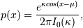
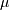
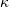
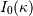
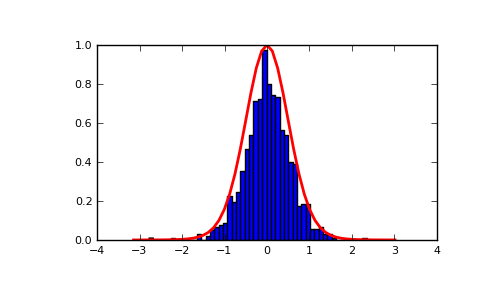

numpy.random.RandomState.vonmises¶
- RandomState.vonmises(mu, kappa, size=None)¶
Draw samples from a von Mises distribution.
Samples are drawn from a von Mises distribution with specified mode (mu) and dispersion (kappa), on the interval [-pi, pi].
The von Mises distribution (also known as the circular normal distribution) is a continuous probability distribution on the unit circle. It may be thought of as the circular analogue of the normal distribution.
Parameters : mu : float
Mode (“center”) of the distribution.
kappa : float
Dispersion of the distribution, has to be >=0.
size : int or tuple of int
Output shape. If the given shape is, e.g., (m, n, k), then m * n * k samples are drawn.
Returns : samples : scalar or ndarray
The returned samples, which are in the interval [-pi, pi].
See also
- scipy.stats.distributions.vonmises
- probability density function, distribution, or cumulative density function, etc.
Notes
The probability density for the von Mises distribution is

where  is the mode and  the dispersion, and  is the modified Bessel function of order 0.
The von Mises is named for Richard Edler von Mises, who was born in Austria-Hungary, in what is now the Ukraine. He fled to the United States in 1939 and became a professor at Harvard. He worked in probability theory, aerodynamics, fluid mechanics, and philosophy of science.
References
Abramowitz, M. and Stegun, I. A. (ed.), Handbook of Mathematical Functions, New York: Dover, 1965.
von Mises, R., Mathematical Theory of Probability and Statistics, New York: Academic Press, 1964.
Examples
Draw samples from the distribution:
>>> mu, kappa = 0.0, 4.0 # mean and dispersion >>> s = np.random.vonmises(mu, kappa, 1000)
Display the histogram of the samples, along with the probability density function:
>>> import matplotlib.pyplot as plt >>> import scipy.special as sps >>> count, bins, ignored = plt.hist(s, 50, normed=True) >>> x = np.arange(-np.pi, np.pi, 2*np.pi/50.) >>> y = -np.exp(kappa*np.cos(x-mu))/(2*np.pi*sps.jn(0,kappa)) >>> plt.plot(x, y/max(y), linewidth=2, color='r') >>> plt.show()
(Source code, png, pdf)

{kind=link}